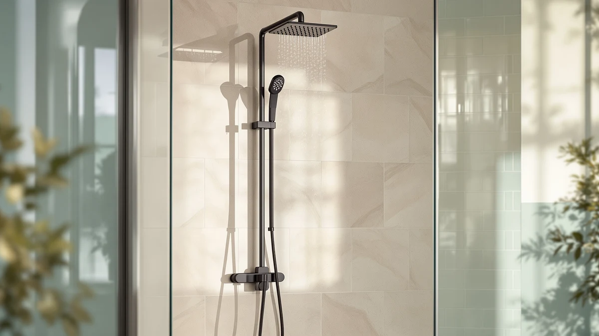

Shower Panel vs Shower Column: What Actually Differs (2026)
Prices and picks verified as of September 2026. Independent, reader-supported reviews.


Things to Know Before You Buy
- A shower panel mounts flush against one wall and packs a rain head, body jets and a handheld wand into a single plate.
- A shower column is an exposed vertical pole that anchors to the floor or existing valve and holds a sliding head bracket.
- Panels typically need more water pressure to run several jets at once; columns work fine on lower-pressure lines.
- Columns are easier to retrofit into an existing shower without cutting into tile or wall plumbing.
- Panels cost more upfront but pack more features per fixture than most columns.
Shower panel vs shower column is the choice most homeowners face once they decide to upgrade a builder-grade shower to something that delivers rainfall, body jets and a handheld wand from one fixture. Both categories solve the same problem, a single-function shower head that leaves you standing under one thin stream, but they get there through different hardware, different install requirements and different price points.
We compared specs, published pricing and verified owner reviews across seven shower panel and shower column models to see where each type earns its keep. Below, you will find how the two categories differ on build quality, price and daily use, plus which one fits your bathroom depending on your wall setup, water pressure and budget.
Quick Answer
A shower panel is the stronger pick for most bathrooms because it packs a rain head, body jets and a handheld wand into one wall-mounted plate with fewer exposed pipes. A shower column suits renters and retrofits better, since it installs onto an existing valve without opening the wall and still adds a rain head and handheld wand to a standard shower.
What is Shower Panel?
A shower panel is a single flat unit, usually stainless steel or aluminum, that mounts flush against one shower wall and consolidates several functions behind one faceplate. Most panels on the market combine an overhead rain shower head, four to six adjustable body jets running down the sides, a handheld sprayer on a hose, and a thermostatic or mechanical mixing valve, all fed by the plumbing already behind that wall.
Because everything routes through the panel itself, you see almost no exposed piping once it is mounted. Brands like Blue Ocean and ELLO&ALLO build panels in the 48 to 52 inch height range, tall enough to cover the body jets from roughly chest to knee height for an adult of average height. Some models add LED lighting in the rain head or a small digital temperature display built into the control panel.
The tradeoff is installation complexity. A panel needs its water lines run inside or behind the wall to reach every jet, which is straightforward during a full renovation but harder to retrofit into a finished bathroom. Owners who install panels during a remodel report a cleaner look than a column, since there is no visible pole or slide bar running up the wall.
What is Shower Column?
A shower column, sometimes called a shower tower, is an exposed vertical pole that mounts to the shower floor and either the ceiling or a wall bracket, then connects to your existing shower valve rather than replacing the wall plumbing. A sliding bracket on the pole holds the shower head at whatever height you set, and most columns add a handheld sprayer on a short hose near the base.
Columns run their supply lines up the outside of the pole instead of behind the tile, which is why plumbers can usually install one in an afternoon without opening the wall. Fewer models include body jets compared to panels, though some column systems from brands like Blue Ocean do add two or three fixed jets along the pole for a similar spray pattern at a lower jet count.
Because a column reuses your current valve and water lines, reviewers consistently note that it is the more budget-friendly route for a shower upgrade in a rental or a bathroom you are not gutting. The exposed pole is more visible than a flush panel, which some buyers like for an industrial look and others find less streamlined.
Head-to-Head: Build Quality & Durability
On raw materials, the shower panel vs shower column comparison is closer than the price tags suggest. Most panels and columns in this price range use either 304 stainless steel or an anodized aluminum shell, and owners report similar rust resistance from both when the finish is not scratched during install. Stainless steel models, like the Blue Ocean 52 inch Stainless Steel and the ELLO&ALLO Stainless Steel Shower Panel, hold up better in hard water areas than the painted aluminum panels, since aluminum finishes can pit once the coating wears through.
Panels have more failure points simply because they have more parts. Six body jets each have their own valve seal, and a stuck or leaking jet is a more common complaint on multi-jet panels than on columns, which typically run one or two spray settings. Columns fail less often but also do less, so there is less to break.
Long-term durability comes down to the mixing valve on both types. A thermostatic valve, standard on higher-end panels like the VANFOXLE Shower System, holds a set temperature more reliably over years of use than the simpler mechanical valves found on entry-level columns. Owners replacing a column valve typically pay less for the part than owners replacing a full panel's internal valve assembly.
Head-to-Head: Price & Value
Shower panels usually cost more than shower columns before you even factor in installation. Among the models we compared, panel pricing ran from about $233 for the VANFOXLE Shower System to $369 for the Blue Ocean 52 inch panels, while comparable columns from the same brands typically list $50 to $100 lower for a similar height and finish.
Installation is where the price gap widens. A column that reuses your existing valve can often go in without hiring a plumber, while a panel needing new supply lines behind the wall usually calls for a licensed installer, adding $150 to $400 depending on your market. For a straight budget upgrade, a column costs less to buy and less to install. For a full remodel where a plumber is already on site, the added labor cost of a panel is marginal, which shifts the value equation toward the panel's extra jets and features.
Head-to-Head: Use Experience
Day to day, the shower panel vs shower column tradeoff plays out in how much control you get over the water. A panel with independent body jet valves lets you run the rain head alone, the jets alone, or all of it together, which matters if two people share a bathroom with different preferences. Owners of multi-jet panels report that hitting every jet at the same time noticeably drops pressure at each one unless your home's incoming water pressure runs above 45 psi.
A column keeps things simpler. You slide the head to your height, pick a spray pattern, and that is the extent of the adjustment. Reviewers consistently describe columns as easier to hand off to a renter or a household with kids, since there are fewer knobs and valves to misuse. The sliding bracket is also the main point buyers compare against a panel's fixed body jets, since it lets a taller or shorter person reposition the head without touching the plumbing.
Cleaning favors the panel's flush design, since there is one flat surface and no exposed pole to wipe down or descale. A column's exposed pipe collects mineral deposits from hard water on the outside, which some owners find more visible and more frequent to clean than a panel's recessed jets.
When to Choose Shower Panel
Pick a shower panel if you are already remodeling the bathroom and have wall access for new supply lines, since that removes the main install barrier. It also makes sense if your household wants multiple spray options, rain head, body jets, and handheld, without juggling separate fixtures, and if your home's water pressure comfortably supports several jets running together.
A panel is the better long-term buy for a primary bathroom you plan to stay in for years, where the higher upfront cost and install labor spread out over a decade or more of daily use. If a flush, low-maintenance look matters more to you than visible hardware, the panel's single flat plate beats a column's exposed pole every time.
When to Choose Shower Column
Choose a shower column if you are renting, working with a tight budget, or want an upgrade that does not require opening the wall. Since a column connects to your existing valve, you can install it yourself in most cases and take it with you if you move, which a wall-mounted panel does not allow.
A column also fits low water pressure homes better, since it typically runs one or two outlets instead of splitting pressure across six or more jets. If your priority is a better shower head and a handheld wand without a full renovation, the column delivers most of that upgrade for less money and less disruption than a panel.
Our Top Picks
If you have decided a shower panel is the right fit, these three stand out for combining a rain head, body jets and a handheld wand at different price points and finishes.

Editor's Pick
Blue Ocean 52" Aluminum SPA392M
A 52 inch aluminum panel with a rain head, body jets and a handheld wand, priced in line with its stainless steel sibling.
$369.00
Check Price on Amazon
Best Value
Blue Ocean 52" Stainless Steel
The stainless steel version of the same 52 inch platform, a better match for hard water homes than the aluminum finish.
$369.00
Check Price on Amazon
Premium Choice
VANFOXLE Shower System Brushed Gold
A brushed gold panel with a thermostatic valve, the lowest-priced pick here and the standout finish for a non-standard look.
$233.83
Check Price on AmazonFrequently Asked Questions
Is a shower panel or a shower column easier to install?
A shower column is usually easier for a retrofit because it mounts to the existing valve and floor without opening the wall, while most shower panels need access to plumbing behind the tile for a clean flush mount.
Which uses less water, a shower panel or a shower column?
Neither category wins outright, since water use depends on how many jets are open at once. A shower panel with six or eight jets running together draws more than a column with a single rain head and handheld wand.
Do shower panels or shower columns need more water pressure?
Shower panels with multiple body jets generally need higher incoming pressure to keep every jet firing at once, while a shower column with fewer outlets performs consistently even on lower-pressure municipal lines.
Can I switch from a shower column to a shower panel later?
Yes, but expect to open the wall for new supply lines, since a column's plumbing runs along the outside of the pole while a panel's jets need lines routed behind the tile.
Do shower panels or shower columns last longer?
Columns tend to have fewer parts and fewer valve seals to wear out, so they need less maintenance over time. Panels can last just as long, but a stuck or leaking body jet is a more common repair on multi-jet models.
Final Verdict
Shower panel vs shower column is not a contest with one universal winner. A shower panel like the Blue Ocean 52 inch Stainless Steel wins on features and finish for a bathroom you are remodeling with wall access to spare. A shower column wins on cost and ease of install for a rental or a quick upgrade that reuses your existing valve. Match the choice to your wall, your water pressure and your budget, and either category will outperform a single-function shower head.